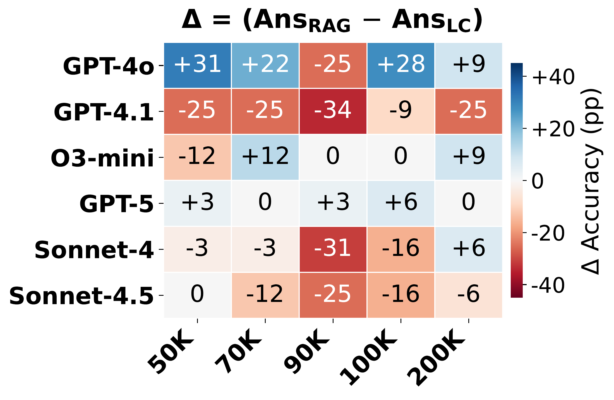
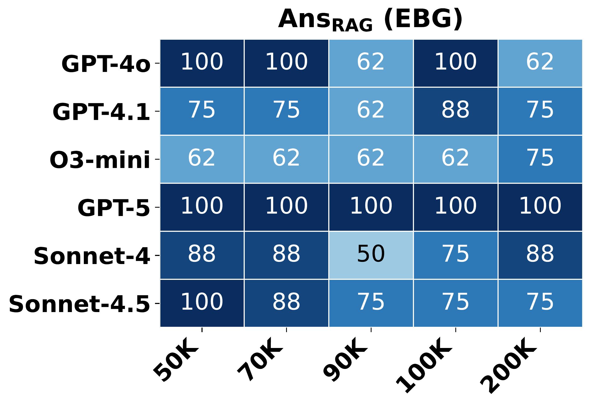
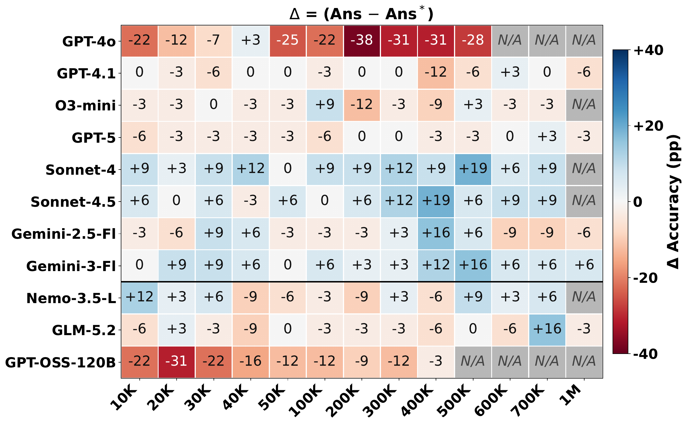
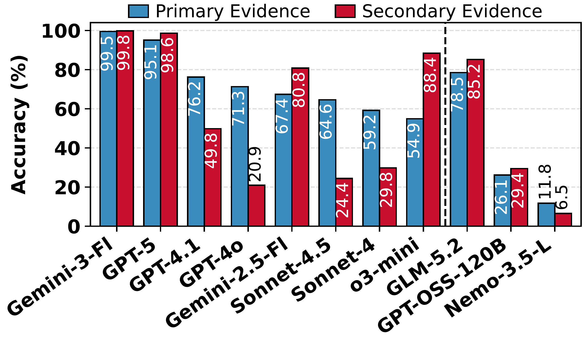
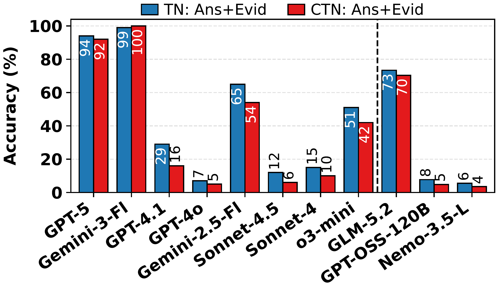
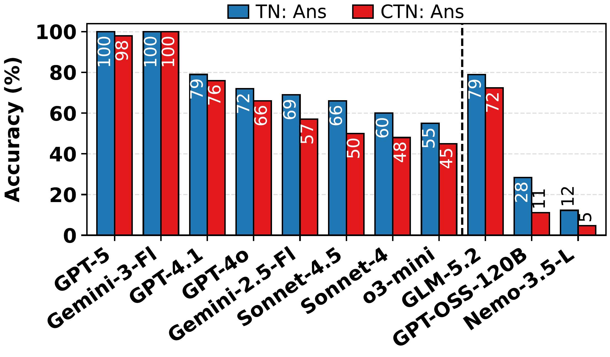
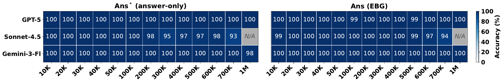

EBG framework
Requires line-level citations and scores answer + evidence(s) jointly with the Ans+Evid accuracy metric.
Diagnosing Evidence-Based Generation with RAG
for Long Context Question Answering
1Inception42 2MBZUAI
* Equal contribution
Correct answers are only part of the story.
Evidence-Based Generation (EBG) asks models to show the evidence, too.
Requires line-level citations and scores answer + evidence(s) jointly with the Ans+Evid accuracy metric.
Four settings probe retrieval and reading over context lengths ranging from 10K–1M characters.
Expose incomplete multi-fact retrieval and document identity lost during chunking.
Test citation gains, evidence completeness, and faithfulness under contradiction.
Retrieval-augmented generation (RAG) is the dominant paradigm for grounding large language models in external corpora, but its similarity-driven, chunked pipeline has structural blind spots: it cannot anticipate which passages a question requires and discards document-level context that resolves cross-passage references. We introduce evidence-based generation (EBG), requiring models to return an answer with line-level citations, and a joint Ans+Evid metric that scores correctness and grounding simultaneously. We reformulate two corpora into evidence-grounded multi-document QA benchmarks — MultiHop-RAG and QASPER-MP, a multi-paper adaptation of QASPER with realistic short paper cues, and pair them with a controlled synthetic two-hop haystack and an evidence-augmented NoLiMa spanning 10K–1M characters. Across ten proprietary frontier and three open-weight LLMs, EBG isolates two RAG limitations that long-context models avoid: similarity retrieval surfaces any relevant chunk far more reliably than all required chunks for multi-fact queries, and chunking destroys document meta-information needed to resolve identity-bearing queries. EBG also exposes grounding failures invisible to answer-only evaluation, including incomplete citations in two-needle settings and a widening gap between Ans and Ans+Evid when context contradicts parametric knowledge. Data and code are available at https://github.com/debobanerjee/LC-EBG.
A correct answer does not tell us whether a model used the right evidence. EBG requires both an answer and line-level citations, separating evidence availability from faithful use of context.
Which brand makes the device Mira uses?
56 Mira uses the PulseTrack device.
67 PulseTrack is made by FitBand.
{ "lines": [56, 67], "answer": "FitBand" }Is the answer correct?
Do the cited lines contain the required supporting evidence?
Are both the answer and the evidence correct?
Four complementary settings probe retrieval, reading, and grounding.
Multi-fact questions across web-news articles, with line-level evidence labels. Tests whether retrieval recovers every required fact.
Experiment details · 50 / 200 queries →A multi-paper adaptation of QASPER with realistic short paper cues. Tests whether document identity and provenance survive chunking.
Experiment details · 50 / 200 queries →Curated needles in a distractor haystack. Separates controlled two-hop reasoning from retrieval failures.
Experiment details →Semantic matching without lexical shortcuts, including single, two, and contradictory two-needle settings over 10K–1M characters.
RQ1 experiment details · retrieval and LC comparison →High-level evidence and key takeaways. Study designs and detailed results are available in the global expandable sections below.
Source experiment: MultiHop-RAG · Experiment B: corpus-wide retrieval analysis ↗
MultiHop-RAG corpus-wide retrieval recovers some gold evidence for 82% of queries at top-10, but all gold evidence for only 19%. In the QASPER-MP 50-query pilot, LC has higher answerable-subset judge scores than the best pool-matched RAG variant for all five models.
MultiHop-RAG retrieval analysis and the pool-matched QASPER-MP experiment point to incomplete evidence retrieval and difficulty resolving source identity. The NoLiMa-based RQ1 experiments show that stronger reranking helps, and that LC-versus-RAG performance remains model-dependent once evidence is available.
Source experiment: NoLiMa LC · answer-only versus EBG prompting; synthetic two-hop control ↗
NoLiMa answer-only-versus-EBG experiments show model-dependent citation gains under long-context stress. The synthetic two-hop control is near ceiling under both prompts; the full results also contain zero and negative effects.
NoLiMa and synthetic prompting experiments suggest citations can help under difficult context, with benefits that depend on the model and task. They do not establish a universal gain or that citation formatting alone causes it.
Source experiment: NoLiMa LC · two-needle primary versus secondary citation experiment (RQ3) ↗
The NoLiMa two-needle citation experiment shows large model-dependent imbalances in citing the two facts. Some models recover both evidence types at near-ceiling rates; others miss one much more often.
NoLiMa two-needle results show that recovering one fact does not guarantee complete grounding. Evaluate evidence completeness alongside answer correctness.
Source experiment: NoLiMa LC · TN versus CTN: adherence to contextual evidence ↗
The NoLiMa TN-versus-CTN experiment shows that correct answers can coexist with poor grounding. Under contradiction, GPT-4.1 reaches 76% answer accuracy but only 16% joint answer-and-evidence accuracy; robustness varies across models.
NoLiMa TN-versus-CTN results show why joint Ans+Evid matters: answer accuracy can hide failures to justify an answer from the supplied context. Contradiction affects models differently.
Open the study designs or the detailed evidence, with source experiments identified throughout.
Source experiment: MultiHop-RAG · setup and Experiments A–C ↗
The 50-query pilot is sampled with seed 0: 13 inference, 21 comparison, and 16 temporal questions. GPT-5, Sonnet-4.5, and Gemini-3-Flash use the same queries, prompts, and scoring. The 200-query stratified pilot evaluates GPT-OSS-120B, GLM-5.2, and Nemotron-3.5-Lightning-30B-A3B (Nemo-3.5-L).
LC: every gold-evidence article plus 20 distractor articles, randomly concatenated and numbered sentence by sentence; about 241K characters (58K tokens) on average. RAG: searches all 609 articles, split into 6,296 sliding windows of 256 tokens, using text-embedding-3-large and cosine similarity. The 50-query sweep uses k = 4, 10, 25, 50, 100, and 200; the 200-query pilot uses k = 10 and 200.
Scoring: answer-only Ans* uses normalized string matching. EBG requires answer plus line citations: Ans scores the answer; Evid (strict) requires every gold line; Ans+Evid requires both. LC guarantees gold-source access while RAG must retrieve from the full corpus, so the conditions are not pool-matched.
Source experiment: QASPER-MP · setup and answerability-split evaluation ↗
QASPER-MP uses the QASPER dev split: 1,005 questions over 281 papers. The 50-query pilot is stratified by answer type: 13 boolean, 13 abstractive, 12 extractive, and 12 unanswerable. It evaluates GPT-5, GPT-5.5, Opus-4.6, Sonnet-4.5, and Gemini-3-Flash. The larger 200-query stratified pilot evaluates GPT-OSS-120B, GLM-5.2, and Nemo-3.5-L with the same indices, EBG prompt, and GPT-5 judge.
LC: the gold paper plus 10 distractor papers, with explicit paper/title/abstract/section boundaries and numbered evidence lines. The 50-query haystacks have median size about 32K characters and maximum about 56K. Questions add short paper cues: 24 author cues and 26 title cues of 2–3 words in the 50-query pilot.
RAG: text-embedding-3-large ranks paragraphs by cosine similarity. flat_pool11@3 and struct_pool11@3 retrieve three paragraphs from the same 11-paper pool as LC; structured retrieval regroups paragraphs by paper and marks gaps. flat_full@10 retrieves ten paragraphs from the full dev corpus (about 6,000 paragraphs). Structural lines provide context but cannot be cited as evidence.
Scoring: Ans-F1 uses the official max-over-annotators protocol. GPT-5 judges content correctness on a 0 / 0.5 / 1 scale. Refusal is the proportion of outputs beginning with “Unanswerable”. Answerable and unanswerable results are reported separately because a high refusal rate can improve the latter while harming the former.
Source experiment: NoLiMa-based RAG · retrieval analysis ↗
This controlled RQ1 experiment uses the evidence-augmented NoLiMa haystacks to test how much text RAG must retrieve for one-hop and two-hop questions. After inserting needles, each haystack line and query is embedded with text-embedding-3-small and ranked by cosine similarity. Full coverage means that the top-k prefix contains every required needle or evidence fact for every evaluated sample in that condition.
The NoLiMa LC protocol uses the T01 test variant, the characters Yuki and Stuart, and 16 needle-placement conditions per context length per model (4 needles × 4 depths), reporting one-hop and two-hop results separately. The primary retrieval-budget table is averaged over three books. The alternative-pipeline and LC-versus-RAG comparisons below use Book 1 only. These are controlled needle-placement experiments, rather than the 50- and 200-query multi-document pilots.
NoLiMa LC protocol: Book 1 haystacks span 10K–1M characters. The T01 test variant uses four needle templates from the 0402 / 0405 families, default and inverse forms, and characters Yuki and Stuart. The manuscript reports 16 needle-placement conditions per context length per model (4 needles × 4 depths). Inputs are line-numbered; EBG outputs an answer and supporting line citations. Context lengths are measured in characters; N/A marks inputs beyond a model’s context window.
NoLiMa comparison: compare answer-only Ans* with answer accuracy under EBG (Ans), separately for one-hop and two-hop questions in the single-needle setting. The primary needle supplies contextual anchor evidence; two-hop questions also require commonsense knowledge that is not explicitly supplied as a secondary needle. SN evidence scores therefore establish anchor citation, rather than a complete context-only inference chain.
Metric: Δ = Ans(EBG) − Ans*(answer-only), in percentage points. Positive values favor EBG. The separate CoT-EBG ablation retains citations and the output schema while adding an explicit reasoning instruction.
NoLiMa LC protocol: Book 1 haystacks span 10K–1M characters. The T01 test variant uses four needle templates from the 0402 / 0405 families, default and inverse forms, and characters Yuki and Stuart. The manuscript reports 16 needle-placement conditions per context length per model (4 needles × 4 depths). Inputs are line-numbered; EBG outputs an answer and supporting line citations. Context lengths are measured in characters; N/A marks inputs beyond a model’s context window.
Needle placement: the primary, character-specific needle is fixed at depth 0.5. A world-consistent secondary needle provides the complementary fact for two-hop reasoning and is placed at depth 0, 0.33, 0.67, or 1. Both facts are supplied in context.
Metric: report the percentage of outputs correctly citing the primary and secondary needle separately under EBG prompting. These are marginal citation rates, not the percentage jointly citing both. This NoLiMa plot covers a subset of the full 13-model study: eight proprietary and three open-weight models; the main observation is whether evidence recovery is balanced across the two fact types.
NoLiMa LC protocol: Book 1 haystacks span 10K–1M characters. The T01 test variant uses four needle templates from the 0402 / 0405 families, default and inverse forms, and characters Yuki and Stuart. The manuscript reports 16 needle-placement conditions per context length per model (4 needles × 4 depths). Inputs are line-numbered; EBG outputs an answer and supporting line citations. Context lengths are measured in characters; N/A marks inputs beyond a model’s context window.
Comparison: factual two-needle (TN) inputs contain world-consistent secondary evidence; contradictory two-needle (CTN) inputs replace it with a conflicting fact, such as black coffee containing steamed milk. The primary needle remains at depth 0.5; the secondary is placed at depth 0, 0.33, 0.67, or 1. Answers must follow supplied context.
Metrics: the same EBG runs are scored on Ans (answer correctness) and Ans+Evid (correct answer with correct supporting evidence). These NoLiMa plots cover a subset of the full 13-model study: eight proprietary and three open-weight models. The table reproduces selected rounded plot values, and the answer–grounding gap is calculated as Ans − Ans+Evid.
Source experiment: Synthetic two-hop LC · answer-only versus EBG prompting ↗
The controlled benchmark uses 66,834 unique single-sentence distractor facts and 10 manually curated two-hop needles. Each needle contains two atomic supporting facts, a question requiring their composition, and accepted answer forms. Distractors are designed to avoid confusion with the needles.
For each target length from 10K to 1M characters, distractor facts are shuffled and accumulated to the target budget. Both supporting facts are inserted at independently sampled positions, with gold evidence locations recorded. Each trial draws a fresh haystack and uniformly samples one of the 10 needles. Inputs use numbered lines.
Synthetic control: 10 curated two-hop needles are inserted into fresh haystacks drawn from 66,834 distractor facts, with independently sampled evidence positions. The setup specifies 100 trials per context length; the plotted results report at least 50 trials per length. GPT-5, Sonnet-4.5, and Gemini-3-Flash are compared under answer-only and EBG prompts.
Metrics: Ans* scores answers under the answer-only prompt. EBG returns an answer and evidence lines and is scored on Ans, Evid, and joint Ans+Evid. Comparing Ans to Ans* measures the answer-accuracy effect of requiring citations. There are no contradictory needles in this benchmark.
Sanity check: at 10K characters, all evaluated frontier models achieve at least 98% joint accuracy over 100 trials, supporting the interpretation of longer-context degradation as a context-handling issue.
Research questions addressed: RQ1 · RQ2 · RQ3 — RQ1: retrieval limitations; RQ2: answer-only versus citation prompting; RQ3: supporting evidence on incomplete multi-fact grounding.
MultiHop-RAG · 2,255 queries · text-embedding-3-large · 256-token windows. Strict annotated-gold coverage; these percentages are not answer-accuracy ceilings.
In MultiHop-RAG Experiment B (corpus-wide retrieval analysis), this measures the retriever before any LLM reads its output: missing evidence is already a major bottleneck. Only 8% of inference queries recover every gold fact at top-10.
Source: MultiHop-RAG Experiment B · 2,255 queries · text-embedding-3-large · 256-token windows · top-10 annotated-gold coverage
Source experiment: QASPER-MP · pool-matched LC versus RAG, answerable subset ↗
In the QASPER-MP pool-matched LC-versus-RAG experiment (EBG, answerable subset), LC beats the best RAG variant for all five frontier models when both methods receive the same 11-paper pool. This is the stronger comparison for document identity and provenance.
| Model | LC | RAG flat@3 | RAG struct@3 | LC − best RAG |
|---|---|---|---|---|
| GPT-5 | 0.605 | 0.500 | 0.553 | +0.05 |
| GPT-5.5 | 0.671 | 0.500 | 0.539 | +0.13 |
| Opus-4.6 | 0.697 | 0.474 | 0.566 | +0.13 |
| Sonnet-4.5 | 0.592 | 0.513 | 0.474 | +0.08 |
| Gemini-3-Flash | 0.658 | 0.487 | 0.539 | +0.12 |
| Model | LC (oracle) | RAG@4 | RAG@10 | RAG@25 | RAG@50 | RAG@100 | RAG@200 |
|---|---|---|---|---|---|---|---|
| GPT-5 | 82 | 58 | 60 | 70 | 72 | 74 | 78 |
| Sonnet-4.5 | 68 | 24 | 36 | 38 | 56 | 58 | 68 |
| Gemini-3-Flash | 80 | 38 | 44 | 50 | 58 | 58 | 70 |
| Model | Metric | LC (oracle) | RAG@4 | RAG@10 | RAG@25 | RAG@50 | RAG@100 | RAG@200 |
|---|---|---|---|---|---|---|---|---|
| GPT-5 | Ans | 86 | 58 | 60 | 64 | 72 | 76 | 76 |
| GPT-5 | Evid (strict) | 36 | 38 | 36 | 30 | 30 | 30 | 30 |
| GPT-5 | Ans+Evid | 28 | 34 | 26 | 22 | 20 | 22 | 22 |
| Sonnet-4.5 | Ans | 82 | 42 | 48 | 62 | 70 | 68 | 74 |
| Sonnet-4.5 | Evid (strict) | 10 | 30 | 30 | 22 | 16 | 18 | 14 |
| Sonnet-4.5 | Ans+Evid | 8 | 26 | 22 | 18 | 16 | 12 | 12 |
| Gemini-3-Flash | Ans | 78 | 38 | 44 | 46 | 64 | 62 | 66 |
| Gemini-3-Flash | Evid (strict) | 40 | 28 | 18 | 24 | 24 | 24 | 28 |
| Gemini-3-Flash | Ans+Evid | 28 | 26 | 14 | 18 | 20 | 18 | 20 |
Observation — MultiHop-RAG Experiments A and C: LC EBG answer accuracy exceeds RAG@10 by 26–34 percentage points, but LC joint accuracy is only 28%, 8%, and 28%. Citation prompting changes LC answer accuracy by +4, +14, and −2 points for GPT-5, Sonnet-4.5, and Gemini-3-Flash, respectively. Higher answer accuracy therefore coexists with incomplete grounding.
Source experiment: MultiHop-RAG · generalization to open-weight models ↗
| Model | Prompt / metric | LC (oracle) | RAG@10 | RAG@200 |
|---|---|---|---|---|
| GPT-OSS-120B | Answer-only Ans* | 75 | 47.5 | 67.5 |
| GPT-OSS-120B | EBG Ans | 54 | 41.5 | 52 |
| GPT-OSS-120B | EBG Evid (strict) | 3 | 13 | 2 |
| GPT-OSS-120B | EBG Ans+Evid | 2 | 9 | 2 |
| GLM-5.2 | Answer-only Ans* | 88 | 53 | 72.5 |
| GLM-5.2 | EBG Ans | 88.5 | 52.5 | 74 |
| GLM-5.2 | EBG Evid (strict) | 35 | 21.5 | 22 |
| GLM-5.2 | EBG Ans+Evid | 30 | 18 | 20.5 |
| Nemo-3.5-L | Answer-only Ans* | 75.5 | 43.5 | 51 |
| Nemo-3.5-L | EBG Ans | 48.2 | 28.5 | 28.5 |
| Nemo-3.5-L | EBG Evid (strict) | 5.5 | 9 | 3 |
| Nemo-3.5-L | EBG Ans+Evid | 5.5 | 7.5 | 2 |
Observation — MultiHop-RAG 200-query open-weight experiment: LC EBG answer accuracy exceeds RAG@10 by 12.5, 36.0, and 19.7 points for GPT-OSS-120B, GLM-5.2, and Nemo-3.5-L. Joint accuracy remains much lower: GPT-OSS-120B reaches 54% LC answer accuracy but 2% joint accuracy. The 2-point GPT-OSS-120B LC lead over RAG@200 lies within the reported uncertainty.
Reading the two pilots: the 50-query and 200-query experiments use different model groups and samples. Differences between their scores cannot be attributed to sample size alone. RAG@200 denotes 200 retrieved chunks; it is separate from the 200-query pilot size.
Research questions addressed: RQ1 — Document identity and provenance in pool-matched and open-corpus retrieval.
Source experiment: QASPER-MP · frontier results split by answerability ↗
| Model | Condition | Answerable Judge (n=38) | Answerable Ans-F1 | Answerable refusal % | Unanswerable Judge (n=12) | Unanswerable Ans-F1 | Unanswerable refusal % |
|---|---|---|---|---|---|---|---|
| GPT-5 | LC | 0.605 | 0.469 | 15.8 | 0.083 | 0.083 | 33.3 |
| GPT-5 | flat_pool11@3 | 0.500 | 0.364 | 31.6 | 0.333 | 0.333 | 58.3 |
| GPT-5 | struct_pool11@3 | 0.553 | 0.390 | 31.6 | 0.583 | 0.583 | 66.7 |
| GPT-5.5 | LC | 0.671 | 0.471 | 13.2 | 0.083 | 0.083 | 16.7 |
| GPT-5.5 | flat_pool11@3 | 0.500 | 0.402 | 23.7 | 0.333 | 0.333 | 41.7 |
| GPT-5.5 | struct_pool11@3 | 0.539 | 0.446 | 21.1 | 0.333 | 0.333 | 25.0 |
| Opus-4.6 | LC | 0.697 | 0.548 | 13.2 | 0.500 | 0.500 | 41.7 |
| Opus-4.6 | flat_pool11@3 | 0.474 | 0.436 | 31.6 | 0.583 | 0.583 | 50.0 |
| Opus-4.6 | struct_pool11@3 | 0.566 | 0.477 | 23.7 | 0.500 | 0.500 | 41.7 |
| Sonnet-4.5 | LC | 0.592 | 0.446 | 18.4 | 0.583 | 0.513 | 41.7 |
| Sonnet-4.5 | flat_pool11@3 | 0.513 | 0.461 | 36.8 | 0.833 | 0.833 | 83.3 |
| Sonnet-4.5 | struct_pool11@3 | 0.474 | 0.402 | 34.2 | 0.667 | 0.667 | 58.3 |
| Gemini-3-Flash | LC | 0.658 | 0.491 | 15.8 | 0.500 | 0.500 | 50.0 |
| Gemini-3-Flash | flat_pool11@3 | 0.487 | 0.412 | 39.5 | 0.750 | 0.750 | 66.7 |
| Gemini-3-Flash | struct_pool11@3 | 0.539 | 0.442 | 31.6 | 0.667 | 0.667 | 58.3 |
Observation — QASPER-MP 50-query experiment: LC exceeds the best pool-matched RAG variant on answerable-subset judge score by 0.052–0.132 across all five models. LC refuses 13.2–18.4% of answerable queries; flat_pool11@3 refuses 23.7–39.5%. Keeping the subsets separate makes this refusal pattern visible.
Source experiment: QASPER-MP · open-weight results split by answerability ↗
| Model | Condition | Answerable Judge (n=150) | Answerable Ans-F1 | Answerable refusal % | Unanswerable Judge (n=50) | Unanswerable Ans-F1 | Unanswerable refusal % |
|---|---|---|---|---|---|---|---|
| GPT-OSS-120B | LC | 0.701 | 0.467 | 8.7 | 0.500 | 0.475 | 42.0 |
| GPT-OSS-120B | flat_pool11@3 | 0.497 | 0.388 | 32.7 | 0.660 | 0.666 | 64.0 |
| GPT-OSS-120B | struct_pool11@3 | 0.537 | 0.418 | 24.7 | 0.640 | 0.646 | 62.0 |
| GPT-OSS-120B | flat_full@10 | 0.497 | 0.369 | 28.0 | 0.670 | 0.661 | 64.0 |
| GLM-5.2 | LC | 0.735 | 0.553 | 6.7 | 0.500 | 0.457 | 36.0 |
| GLM-5.2 | flat_pool11@3 | 0.477 | 0.364 | 33.3 | 0.680 | 0.686 | 66.0 |
| GLM-5.2 | struct_pool11@3 | 0.477 | 0.360 | 33.3 | 0.660 | 0.665 | 64.0 |
| GLM-5.2 | flat_full@10 † | 0.497 | 0.385 | 30.4 | 0.673 | 0.668 | 65.3 |
| Nemo-3.5-L | LC | 0.523 | 0.375 | 12.0 | 0.530 | 0.513 | 42.0 |
| Nemo-3.5-L | flat_pool11@3 | 0.397 | 0.316 | 21.3 | 0.330 | 0.326 | 32.0 |
| Nemo-3.5-L | struct_pool11@3 | 0.450 | 0.349 | 20.7 | 0.390 | 0.387 | 38.0 |
| Nemo-3.5-L | flat_full@10 | 0.433 | 0.329 | 22.7 | 0.420 | 0.406 | 40.0 |
Observation — QASPER-MP 200-query experiment: LC exceeds the best evaluated RAG variant on answerable-subset judge score by 0.164 (GPT-OSS-120B), 0.238 (GLM-5.2), and 0.073 (Nemo-3.5-L). LC refuses 6.7–12.0% of answerable queries, versus 21.3–33.3% for flat_pool11@3. Full-corpus RAG@10 scores 0.433–0.497 on the answerable subset.
Reading the two pilots: the 50-query and 200-query experiments use different model groups and samples. Differences between their scores cannot be attributed to sample size alone. RAG@200 denotes 200 retrieved chunks; it is separate from the 200-query pilot size.
Research questions addressed: RQ1 — Full-evidence retrieval budgets and LC-versus-RAG behavior.
| Haystack chars | Indexed vectors | One-hop k | One-hop chars | Two-hop k | Two-hop chars |
|---|---|---|---|---|---|
| 10K | 66 | 2 | 350 | 10 | 1,956 |
| 20K | 124 | 4 | 823 | 21 | 4,756 |
| 30K | 173 | 4 | 818 | 25 | 5,875 |
| 40K | 247 | 4 | 607 | 36 | 6,771 |
| 50K | 297 | 4 | 584 | 42 | 9,906 |
| 60K | 381 | 9 | 1,902 | 63 | 12,600 |
| 70K | 395 | 11 | 2,343 | 71 | 15,902 |
| 80K | 470 | 8 | 1,876 | 82 | 16,841 |
| 90K | 513 | 9 | 1,985 | 78 | 17,236 |
| 100K | 584 | 10 | 2,452 | 92 | 20,567 |
| 200K | 1,179 | 20 | 4,725 | 169 | 39,052 |
| 300K | 1,739 | 35 | 7,126 | 276 | 63,009 |
| 400K | 2,275 | 43 | 8,244 | 348 | 77,792 |
| 500K | 2,852 | 48 | 11,548 | 444 | 99,519 |
| 600K | 3,468 | 59 | 12,410 | 528 | 117,251 |
| 700K | 4,034 | 62 | 13,981 | 635 | 136,473 |
| 800K | 4,658 | 83 | 17,771 | 750 | 164,002 |
| 900K | 5,247 | 92 | 20,234 | 821 | 177,879 |
| 1M | 5,730 | 96 | 22,910 | 890 | 202,412 |
Observation — NoLiMa three-book retrieval analysis: two-hop full coverage grows from 10 vectors / 1,956 characters at a 10K haystack to 890 vectors / 202,412 characters at 1M. At 1M, that is 9.27 times the one-hop vector budget (96) and 8.83 times the one-hop text budget (22,910 characters). Small fixed top-k budgets therefore cannot provide full coverage across these tested long-context conditions.
Source experiment: NoLiMa Book 1 · Embedding-RAG, BM25-RAG, and Qwen3-Reranker-8B ↗
All three pipelines use the same Book 1 full-coverage criterion. BM25 uses lexical ranking. Qwen3-Reranker-8B reorders embedding-retrieved candidates by relevance. These Book 1 values are separate from the three-book averages above.
| Pipeline | One-hop k | One-hop chars | Two-hop k | Two-hop chars |
|---|---|---|---|---|
| Embedding-RAG | 104 | 23,589 | 920 | 217,152 |
| BM25-RAG | 307 | 102,475 | 1,061 | 265,785 |
| Qwen3-Reranker-8B | 1 | 62 | 149 | 21,372 |
Observation — NoLiMa Book 1 pipeline comparison: the reranker reduces the two-hop text budget from 217,152 to 21,372 characters, about a tenfold reduction. It reaches one-hop full coverage at top-1 across tested lengths. Two-hop full-coverage depth still rises to 149 at 1M, so stronger ranking substantially improves efficiency while leaving a residual multi-evidence retrieval burden.
Source experiment: NoLiMa Book 1 · randomly sampled haystacks versus top-k ranked retrieval ↗
For each source haystack, the experiment chooses the smallest embedding-ranked top-k prefix containing all gold evidence, measures its character count, and compares it with the nearest available LC haystack length. Both readers use the same answer-plus-evidence prompt; the reported comparison metric is answer accuracy (Ans).
Interpretation: the full-coverage k is selected using gold evidence. This diagnoses reading behavior when retrieval has already found the necessary evidence; it does not evaluate a deployable fixed-k retriever. Budgets are approximately matched in characters, and input structure and source haystack size still differ.
| Source haystack chars | Full-coverage k | Retrieved chars | Matched LC chars |
|---|---|---|---|
| 200K | 176 | 45,742 | 50K |
| 400K | 340 | 72,493 | 70K |
| 500K | 422 | 93,694 | 90K |
| 600K | 530 | 113,052 | 100K |
| 1M | 920 | 217,152 | 200K |

Observation — NoLiMa Book 1 matched-budget comparison: there is no universal winner. GPT-4o favors RAG in four of five matched budgets (+31, +22, +28, and +9 points); GPT-4.1 favors LC at every budget (RAG-minus-LC deltas from −9 to −34 points). GPT-5 is near parity (+3, 0, +3, +6, 0 points). Complete evidence availability alone therefore does not determine which context format produces the better answer.

The three-book retrieval analysis shows the growing cost of recovering all evidence. The Book 1 pipeline experiment shows that reranking can reduce that cost substantially. Once gold evidence is available, the Book 1 matched-budget experiment finds model-dependent LC-versus-RAG behavior, rather than a universal LC advantage.
Research questions addressed: RQ2 · RQ3 · RQ4 — Citation prompting, two-needle citation completeness, and faithfulness under contradictory context.
Research questions addressed: RQ2 — Answer accuracy with versus without evidence citations.
NoLiMa gains shown for reported settings from 300K to 900K characters; not an all-model average. The full heatmap includes zero and negative effects, too.
The NoLiMa LC answer-only-versus-EBG experiment and the synthetic two-hop prompting control contrast challenging semantic retrieval with an easy controlled haystack. EBG improves answer accuracy in many NoLiMa settings; on synthetic two-hop inputs, both prompts are already near ceiling.
Source experiment: NoLiMa LC · answer-only versus EBG prompting (RQ2) ↗

Source experiment: NoLiMa LC · EBG versus CoT-EBG prompting ablation ↗
In the NoLiMa LC EBG-versus-CoT-EBG prompting ablation, with evidence citation and the output schema retained, CoT-EBG improves aggregate two-hop answer accuracy for every evaluated model, by 12.3 percentage points on a model-macro average. This supports a role for explicit reasoning beyond the standard citation prompt. See the paper’s EBG versus CoT-EBG appendix.
Research questions addressed: RQ3 — Completeness and asymmetry of primary and secondary evidence citations.
NoLiMa two-needle setting · aggregate rates reported in the manuscript. Primary = character-specific fact; secondary = complementary fact for two-hop reasoning.
In the NoLiMa LC two-needle citation experiment, Sonnet-4.5 shows a large imbalance between the two evidence types. GPT-4o is more extreme at 71.3% versus 20.9%. These are separate citation rates, not the rate of citing both needles jointly.

Research questions addressed: RQ4 — Context faithfulness in factual versus contradictory two-needle inputs.
TN = factual two-needle; CTN = contradictory two-needle. Primary needle at depth 0.5; secondary needle at depths 0, 0.33, 0.67, or 1. Values transcribed from the paired manuscript plots; plot labels are rounded to whole percentages.
In the NoLiMa LC TN-versus-CTN experiment, on the same GPT-4.1 runs, contradiction changes answer accuracy from 79% to 76%, but joint Ans+Evid from 29% to 16%. The answer–grounding gap widens from 50 to 60 percentage points.
| Model | Ans | Ans+Evid | Answer–grounding gap |
|---|---|---|---|
| GPT-4.1 | 79 → 76 | 29 → 16 | 50 → 60 pp |
| Sonnet-4.5 | 66 → 50 | 12 → 6 | 54 → 44 pp |
| Gemini-3-Flash | 100 → 100 | 99 → 100 | 1 → 0 pp |
| GLM-5.2 | 79 → 72 | 73 → 70 | 6 → 2 pp |


Research questions addressed: RQ2 — Controlled answer-only versus EBG comparison; a near-ceiling boundary condition for citation gains.
Source experiment: Synthetic two-hop LC · answer-only versus EBG prompting ↗

In the synthetic two-hop LC answer-only-versus-EBG experiment, GPT-5 and Gemini-3-Flash maintain at least 98% answer accuracy across tested lengths; Sonnet-4.5 stays at 93–100% through 700K characters. There is little headroom for improvement.
Observation — Synthetic two-hop answer-only versus EBG experiment: the two prompts produce nearly identical answer accuracy within sampling noise across the reported cells. Near-ceiling performance leaves little headroom for a citation benefit. This controlled result complements the more challenging NoLiMa-based LC prompting experiment; it does not establish that citations are universally ineffective.
Manuscript citation. Update with the arXiv identifier and publication details when available.
@misc{banerjee_lcebg,
title = {The Bottleneck Is Retrieval, Not Reading:
Diagnosing Evidence-Based Generation with RAG
for Long Context Question Answering},
author = {Debopriyo Banerjee and Owais Aijaz and
Ahmer Tabassum and Zhuohan Xie and
Preslav Nakov and Veselin Stoyanov},
howpublished = {Manuscript},
url = {https://github.com/debobanerjee/LC-EBG}
}